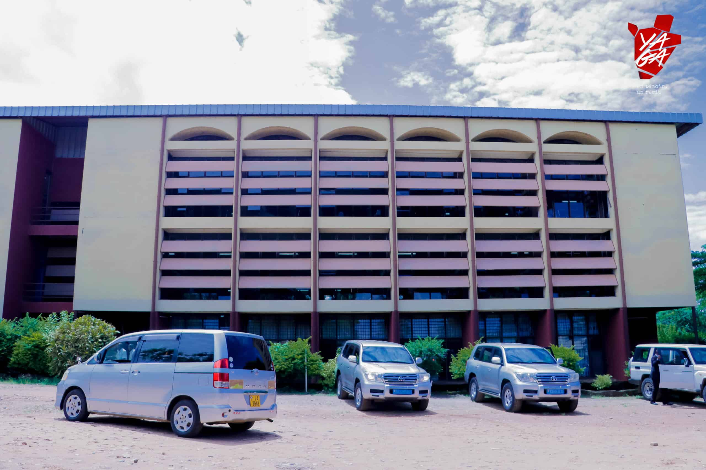

Environmental Club of the University of Burundi
“We have come together to protect the environment and raise awareness among Burundian youth to actively engage in maintenance work,” say the members of the club.
The members of the Environmental Club at the University of Burundi have united with the aim of carrying out activities focused on environmental protection and promoting environmental education through actions related to biodiversity conservation. This was revealed during an interview with Thierry Nizigiyimana, the head of the club.
At a time when natural disasters linked to climate change are increasingly noticeable, students from the University of Burundi's Mutanga campus who are part of the environmental club are taking the lead in environmental protection. "We have come together to contribute to the protection of the environment and to raise awareness among Burundian youth to actively engage in maintenance activities," explained Thierry Nizigiyimana. "Every month, we organize maintenance activities on Mutanga Campus, collect plastic waste, and install trash bins for biodegradable and non-biodegradable waste," he added.
Activities Carried Out
Mr. Nizigiyimana stated that 50 students from various departments have been trained on biodiversity, and conferences have been organized to raise awareness among youth about protecting nature. In collaboration with the European Union delegation in Burundi, they planted trees along Mwezi Gisabo Boulevard near the Military Hospital. They also collected plastic waste at Cotebu Market and cleaned out drainage canals. On International Tree Day, he said that bamboo was planted along the Mutimbuzi River in collaboration with the Burundi Office for Environmental Protection (OBPE).
Mr. Nizigiyimana emphasized that environmental protection is everyone's responsibility. Harmful practices that degrade the environment must be eliminated, as they have serious consequences on human life and are at the root of climate change.
He urged the population not to throw waste carelessly and to adopt a mindset geared toward environmental protection. He also called on the government for financial support to facilitate awareness-raising activities on the connection between human activities and climate change.